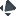

-
Open the Tracker Lens panel by clicking the

icon in the browser toolbar.
-
- Tracker Lens starts recording connections as soon as it's installed.
- To start visualizing your online interactions, open a new tab, navigate to a site, then re-open the Tracker Lens panel.
- Cookie synchronization detection between third parties is supported.
- Built on top of Mozilla Lightbeam (discontinued in 2019) and Thunderbeam-Lightbeam by KCL - see the research papers from the original team.